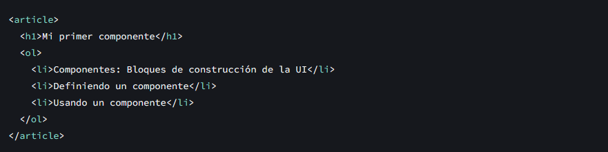
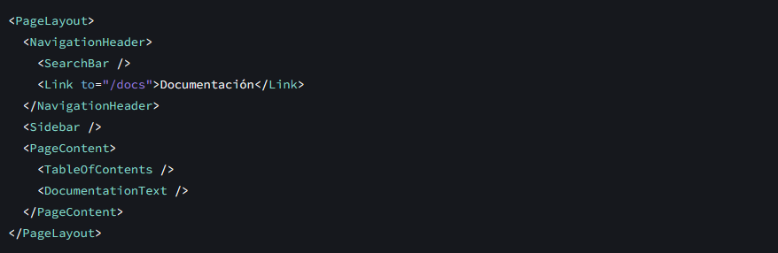
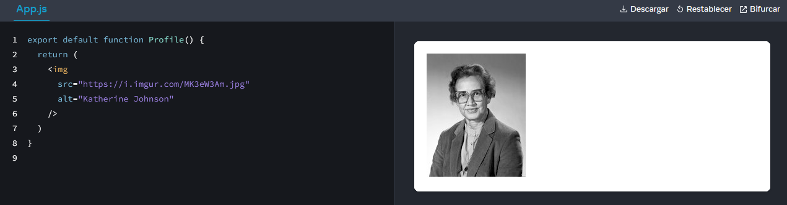
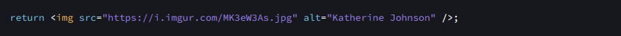
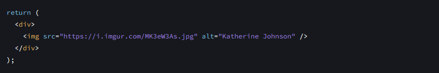
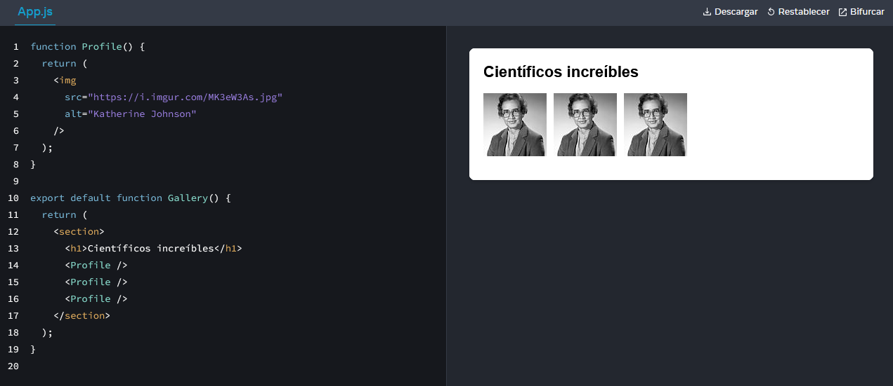
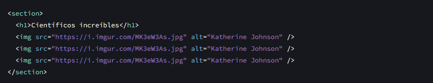
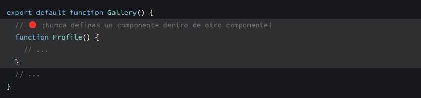
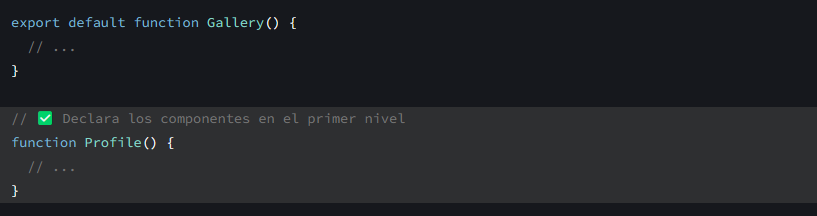

React es una biblioteca de JavaScript para renderizar interfaces de usuario (UI por sus siglas en inglés). La UI se construye a partir de pequeñas unidades como botones, texto e imágenes. React te permite combinarlas en componentes reutilizables y anidables. Desde sitios web hasta aplicaciones de teléfonos, todo en la pantalla se puede descomponer en componentes. En este capítulo aprenderás a crear, adaptar y mostrar de forma condicional componentes de React.
Los componentes son uno de los conceptos esenciales de React. Constituyen los cimientos sobre los que construyes interfaces de usuario (UIs por sus siglas en inglés). ¡Y eso los convierte en el lugar perfecto para comenzar tu recorrido por React!
Aprenderás:
- Qué es un componente
- Qué papel desempeñan los componentes en una aplicación de React
- Cómo escribir tu primer componente de React
Componentes: Elementos básicos para construir UIs
En la Web, HTML nos permite crear documentos estructurados con su conjunto integrado de etiquetas como <h1> y <li>:

Este marcado representa un artículo <article>, su encabezado <h1>, y una tabla de contenidos (abreviada) representada como una lista ordenada <ol>. Un marcado como este, combinado con CSS para los estilos y JavaScript para la interactividad, están detrás de cada barra lateral, avatar, modal, menú desplegable y cualquier otra pieza de UI que ves en la web.
React te permite combinar tu marcado, CSS y JavaScript en «componentes» personalizados, elementos reutilizables de UI para tu aplicación. El código de la tabla de contenidos que viste arriba pudo haberse transformado en un componente <TableOfContents /> que podrías renderizar en cada página. Por detrás, seguiría utilizando las mismas etiquetas HTML como <article>, <h1>, etc.
De la misma forma que con las etiquetas HTML, puedes componer, ordenar y anidar componentes para diseñar páginas completas. Por ejemplo la página de documentación que estás leyendo está hecha de componentes de React:

En la medida en que tu proyecto crece, notarás que muchos de tus diseños se pueden componer mediante la reutilización de componentes que ya escribiste, acelerando el desarrollo. ¡Nuestra tabla de contenido de arriba podría añadirse a cualquier pantalla con <TableOfContents />! Incluso puedes montar tu proyecto con los miles de componentes compartidos por la comunidad de código abierto de React como Chakra UI y Material UI.
Definir un componente
Tradicionalmente, cuando se creaban páginas web, los desarrolladores web usaban lenguaje de marcado para describir el contenido y luego añadían interacciones agregando un poco de JavaScript. Esto funcionaba perfectamente cuando las interacciones eran algo deseable, pero no imprescindible en la web. Ahora es algo que se espera de muchos sitios y de todas las aplicaciones. React pone la interactividad primero usando aún la misma tecnología: un componente de React es una función de JavaScript a la que puedes agregar markup. Aquí vemos cómo luce esto:

Y aquí veremos cómo construir un componente:
Paso 1: Exporta el componente
El prefijo export default es parte de la sintaxis estándar de Javascript (no es específico de React). Te permite marcar la función principal en un archivo para que luego puedas importarlas en otros archivos. (¡Más sobre importar en Importar y exportar componentes!).
Paso 2: Define la función
Con function Profile() { } defines una función con el nombre Profile.
Atención
¡Los componentes de React son funciones regulares de JavaScript, pero sus nombres deben comenzar con letra mayúscula o no funcionarán!
Paso 3: Añade marcado
El componente retorna una etiqueta <img /> con atributos src y alt. <img /> se escribe como en HTML, ¡pero en realidad es JavaScript por detrás! Esta sintaxis se llama JSX, y te permite incorporar marcado dentro de JavaScript.
Las sentencias return se pueden escribir todo en una línea, como en este componente:

Pero si tu marcado no está todo en la misma línea que la palabra clave return, debes ponerlo dentro de paréntesis como en este ejemplo:

Atención
¡Sin paréntesis, todo el código que está en las líneas posteriores al return serán ignoradas!
Usar un componente
Ahora que has definido tu componente Profile, puedes anidarlo dentro de otros componentes. Por ejemplo, puedes exportar un componente Gallery que utilice múltiples componentes Profile:

Lo que ve el navegador
Nota la diferencia de mayúsculas y minúsculas:
- <section> está en minúsculas, por lo que React sabe que nos referimos a una etiqueta HTML.
- <Profile /> comienza con una P mayúscula, por lo que React sabe que queremos usar nuestro componente llamado Profile.
Y Profile contiene aún más HTML: <img />. Al final lo que el navegador ve es esto:

Anidar y organizar componentes
Los componentes son funciones regulares de JavaScript, por lo que puedes tener múltiples componentes en el mismo archivo. Esto es conveniente cuando los componentes son relativamente pequeños o están estrechamente relacionados entre sí. Si este archivo se torna abarrotado, siempre puedes mover Profile a un archivo separado. Aprenderás como hacer esto pronto en la página sobre imports.
Dado que los componentes Profile se renderizan dentro de Gallery —¡incluso varias veces!— podemos decir que Gallery es un componente padre, que renderiza cada Profile como un «hijo». Este es la parte mágica de React: puedes definir un componente una vez, y luego usarlo en muchos lugares y tantas veces como quieras.
Atención
Los componentes pueden renderizar otros componentes, pero nunca debes anidar sus definiciones:

El fragmento de código de arriba es muy lento y causa errores. En su lugar, define cada componente en el primer nivel:

Cuando un componente hijo necesita datos de su padre, pásalo por props en lugar de anidar las definiciones.